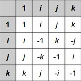

It's opening night at the opera, and your friend is the prima donna (the lead female singer). You will not be in the audience, but you want to make sure she receives a standing ovation -- with every audience member standing up and clapping their hands for her.
Initially, the entire audience is seated. Everyone in the audience has a shyness level. An audience member with shyness level Si will wait until at least Si other audience members have already stood up to clap, and if so, she will immediately stand up and clap. If Si = 0, then the audience member will always stand up and clap immediately, regardless of what anyone else does. For example, an audience member with Si = 2 will be seated at the beginning, but will stand up to clap later after she sees at least two other people standing and clapping.
You know the shyness level of everyone in the audience, and you are prepared to invite additional friends of the prima donna to be in the audience to ensure that everyone in the crowd stands up and claps in the end. Each of these friends may have any shyness value that you wish, not necessarily the same. What is the minimum number of friends that you need to invite to guarantee a standing ovation?
The first line of the input gives the number of test cases, T. T test cases follow. Each consists of one line with Smax, the maximum shyness level of the shyest person in the audience, followed by a string of Smax + 1 single digits. The kth digit of this string (counting starting from 0) represents how many people in the audience have shyness level k. For example, the string "409" would mean that there were four audience members with Si = 0 and nine audience members with Si = 2 (and none with Si = 1 or any other value). Note that there will initially always be between 0 and 9 people with each shyness level.
The string will never end in a 0. Note that this implies that there will always be at least one person in the audience.
For each test case, output one line containing "Case #x: y", where x is the test case number (starting from 1) and y is the minimum number of friends you must invite.
1 ≤ T ≤ 100.
0 ≤ Smax ≤ 6.
0 ≤ Smax ≤ 1000.
input
4
4 11111
1 09
5 110011
0 1
output
Case #1: 0
Case #2: 1
Case #3: 2
Case #4: 0
In Case #1, the audience will eventually produce a standing ovation on its own, without you needing to add anyone -- first the audience member with Si = 0 will stand up, then the audience member with Si = 1 will stand up, etc.
In Case #2, a friend with Si = 0 must be invited, but that is enough to get the entire audience to stand up.
In Case #3, one optimal solution is to add two audience members with Si = 2.
In Case #4, there is only one audience member and he will stand up immediately. No friends need to be invited.
At the Infinite House of Pancakes, there are only finitely many pancakes, but there are infinitely many diners who would be willing to eat them! When the restaurant opens for breakfast, among the infinitely many diners, exactly D have non-empty plates; the ith of these has Pi pancakes on his or her plate. Everyone else has an empty plate.
Normally, every minute, every diner with a non-empty plate will eat one pancake from his or her plate. However, some minutes may be special. In a special minute, the head server asks for the diners' attention, chooses a diner with a non-empty plate, and carefully lifts some number of pancakes off of that diner's plate and moves those pancakes onto one other diner's (empty or non-empty) plate. No diners eat during a special minute, because it would be rude.
You are the head server on duty this morning, and it is your job to decide which minutes, if any, will be special, and which pancakes will move where. That is, every minute, you can decide to either do nothing and let the diners eat, or declare a special minute and interrupt the diners to make a single movement of one or more pancakes, as described above.
Breakfast ends when there are no more pancakes left to eat. How quickly can you make that happen?
The first line of the input gives the number of test cases, T. T test cases follow. Each consists of one line with D, the number of diners with non-empty plates, followed by another line with D space-separated integers representing the numbers of pancakes on those diners' plates.
For each test case, output one line containing "Case #x: y", where x is the test case number (starting from 1) and y is the smallest number of minutes needed to finish the breakfast.
1 ≤ T ≤ 100.
1 ≤ D ≤ 6.
1 ≤ Pi ≤ 9.
1 ≤ D ≤ 1000.
1 ≤ Pi ≤ 1000.
input
3
1
3
4
1 2 1 2
1
4
output
Case #1: 3
Case #2: 2
Case #3: 3
In Case #1, one diner starts with 3 pancakes and everyone else's plate is empty. One optimal strategy is:
Minute 1: Do nothing. The diner will eat one pancake.
Minute 2 (special): Interrupt and move one pancake from that diner's stack onto another diner's empty plate. (Remember that there are always infinitely many diners with empty plates available, no matter how many diners start off with pancakes.) No pancakes are eaten during an interruption.
Minute 3: Do nothing. Each of those two diners will eat one of the last two remaining pancakes.
In Case #2, it is optimal to let the diners eat for 2 minutes, with no interruptions, during which time they will finish all the pancakes.
In Case #3, one diner starts with 4 pancakes and everyone else's plate is empty. It is optimal to use the first minute as a special minute to move two pancakes from the diner's plate to another diner's empty plate, and then do nothing and let the diners eat for the second and third minutes.
The Dutch computer scientist Edsger Dijkstra made many important contributions to the field, including the shortest path finding algorithm that bears his name. This problem is not about that algorithm.
You were marked down one point on an algorithms exam for misspelling "Dijkstra" -- between D and stra, you wrote some number of characters, each of which was either i, j, or k. You are prepared to argue to get your point back using quaternions, an actual number system (extended from complex numbers) with the following multiplicative

To multiply one quaternion by another, look at the row for the first quaternion and the column for the second quaternion. For example, to multiply i by j, look in the row for i and the column for j to find that the answer is k. To multiply j by i, look in the row for j and the column for i to find that the answer is -k.
As you can see from the above examples, the quaternions are not commutative -- that is, there are some a and b for which a * b != b * a. However they are associative -- for any a, b, and c, it's true that a * (b * c) = (a * b) * c.
Negative signs before quaternions work as they normally do -- for any quaternions a and b, it's true that -a * -b = a * b, and -a * b = a * -b = -(a * b).
You want to argue that your misspelling was equivalent to the correct spelling ijk by showing that you can split your string of is, js, and ks in two places, forming three substrings, such that the leftmost substring reduces (under quaternion multiplication) to i, the middle substring reduces to j, and the right substring reduces to k. (For example, jij would be interpreted as j * i * j; j * i is -k, and -k * j is i, so jij reduces to i.) If this is possible, you will get your point back. Can you find a way to do it?
The first line of the input gives the number of test cases, T. T test cases follow. Each consists of one line with two space-separated integers L and X, followed by another line with L characters, all of which are i, j, or k. Note that the string never contains negative signs, 1s, or any other characters. The string that you are to evaluate is the given string of L characters repeated X times. For instance, for L = 4, X = 3, and the given string kiij, your input string would be kiijkiijkiij.
For each test case, output one line containing "Case #x: y", where x is the test case number (starting from 1) and y is either YES or NO, depending on whether the string can be broken into three parts that reduce to i, j, and k, in that order, as described above.
1 ≤ T ≤ 100.
1 ≤ L ≤ 10000.
1 ≤ X ≤ 10000.
1 ≤ L * X ≤ 10000.
1 ≤ X ≤ 1012.
1 ≤ L * X ≤ 1016.
input
5
2 1
ik
3 1
ijk
3 1
kji
2 6
ji
1 10000
i
output
Case #1: NO
Case #2: YES
Case #3: NO
Case #4: YES
Case #5: NO
In Case #1, the string is too short to be split into three substrings.
In Case #2, just split the string into i, j, and k.
In Case #3, the only way to split the string into three parts is k, j, i, and this does not satisfy the conditions.
In Case #4, the string is jijijijijiji. It can be split into jij (which reduces to i), iji (which reduces to j), and jijiji (which reduces to k).
In Case #5, no matter how you choose your substrings, none of them can ever reduce to a j or a k.
An N-omino is a two-dimensional shape formed by joining N unit cells fully along their edges in some way. More formally, a 1-omino is a 1x1 unit square, and an N-omino is an (N-1)omino with one or more of its edges joined to an adjacent 1x1 unit square. For the purpose of this problem, we consider two N-ominoes to be the same if one can be transformed into the other via reflection and/or rotation. For example, these are the five possible 4-
And here are some of the 108 possible 7-ominoes:
Richard and Gabriel are going to play a game with the following rules, for some predetermined values of X, R, and C:
Given particular values X, R, and C, can Richard choose an X-omino that will ensure that he wins, or is Gabriel guaranteed to win no matter what Richard chooses?
The first line of the input gives the number of test cases, T. T lines follow. Each contains three space-separated integers: X, R, and C.
For each test case, output one line containing "Case #x: y", where x is the test case number (starting from 1) and y is either RICHARD (if there is at least one choice that ensures victory for Richard) or GABRIEL (if Gabriel will win no matter what Richard chooses).
T = 64.
1 ≤ X, R, C ≤ 4.
1 ≤ T ≤ 100.
1 ≤ X, R, C ≤ 20.
input
4
2 2 2
2 1 3
4 4 1
3 2 3
output
Case #1: GABRIEL
Case #2: RICHARD
Case #3: RICHARD
Case #4: GABRIEL
In case #1, Richard only has one 2-omino available to choose -- the 1x2 block formed by joining two unit cells together. No matter how Gabriel places this block in the 2x2 grid, he will leave a hole that can be exactly filled with another 1x2 block. So Gabriel wins.
In case #2, Richard has to choose the 1x2 block, but no matter where Gabriel puts it, he will be left with a single 1x1 hole that he cannot fill using only 2-ominoes. So Richard wins.
In case #3, one winning strategy for Richard is to choose the 2x2 square 4-omino. There is no way for Gabriel to fit that square into the 4x1 grid such that it is completely contained within the grid, so Richard wins.
In case #4, Richard can either pick the straight 3-omino or the L-shaped 3-omino. In either case, Gabriel can fit it into the grid and then use another copy of the same 3-omino to fill in the remaining hole.
repost in Apr, 12 2015 20 : 35